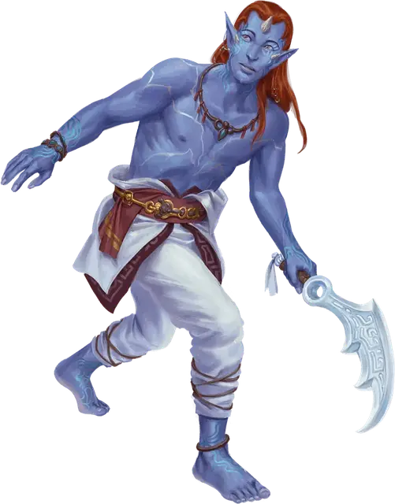

Искатель Ирд
Irda Seeker
Средний Великан, любое мировоззрение

Класс Доспеха 12
Хиты 27 (5к8 + 5)
Скорость 30 футов
| мод | спас | ||
|---|---|---|---|
| СИЛ | 10 | +0 | +0 |
| ЛОВ | 15 | +2 | +4 |
| ТЕЛ | 12 | +1 | +1 |
| мод | спас | ||
|---|---|---|---|
| ИНТ | 11 | +0 | +0 |
| МДР | 14 | +2 | +2 |
| ХАР | 16 | +3 | +5 |
Навыки Восприятие +6, Проницательность +6, Скрытность +4
Чувства истинное зрение 5 футов, тёмное зрение 60 футов, пассивное Восприятие 16
Языки Общий, Великаний, Сильван
Опасность 1 (200 опыта)
Бонус мастерства +2
Действия
Мультиатака. Искатель использует Увеличение физической силы, если доступно, и совершает две атаки Кристальным клинком.
Кристальный клинок. Рукопашная атака оружием +4 к попаданию, досягаемость 5 фт., одна цель. Попадание: 5 (1к6 + 2) урона силовым полем, плюс 7 (2к6) урона силовым полем, если искатель Большой.
Увеличение физической силы (1/день). На 1 минуту искатель магическим образом усиливает свои физические способности и увеличивается в размерах вместе со всем, что он носит или несёт. Во время увеличения ищущий становится Большим и совершает спасброски Силы и Ловкости с преимуществом. Если искателю не хватает места, чтобы стать Большим, он достигает максимально возможного размера в доступном пространстве.
Изменение формы (1/день. ). Искатель волшебным образом трансформируется, чтобы выглядеть и чувствовать себя как Средний Гуманоид, которого он видел. Любое снаряжение, которое ищущий носит или несёт, не трансформируется, и характеристики искателя не меняются. Искатель возвращается в свою истинную форму, если хиты искателя опускаются до 0 или если ищущий использует действие, чтобы закончить трансформацию.
Бонусные действия
Прогулка по завесе (перезарядка 4–6). Искатель вместе со всем снаряжением, которое он носит или несёт, становится невидимым и телепортируется в незанятое пространство, которое он может видеть в пределах 30 футов от себя. Искатель остается невидимым до начала своего следующего хода или сразу после того, как искатель совершит бросок атаки, в зависимости от того, что наступит раньше.
Описание
Ирды. Королева драконов создала ирд давным-давно. Хотя большинство ирд приняли учение своей злобной создательницы, некоторые из них приняли философию других божеств. Те ирды, которые не служат Королеве Драконов, живут в скрытых общинах по всему Кринну, избегая глаз своей создательницы и ее приспешников.
Далекие родственники они [oni], огров [ogre] и других великанов, ирды имеют мерцающую кожу, которая бывает оттенков индиго и морской зелени. Их врожденная магия дает им ограниченные способности к изменению формы и способность создавать иллюзии.
Искатели ирды — искусные шпионы, использующие свою магию для маскировки и сбора информации для своих союзников. В бою искатели ирды могут на мгновение замаскироваться, когда мечутся по полю боя.